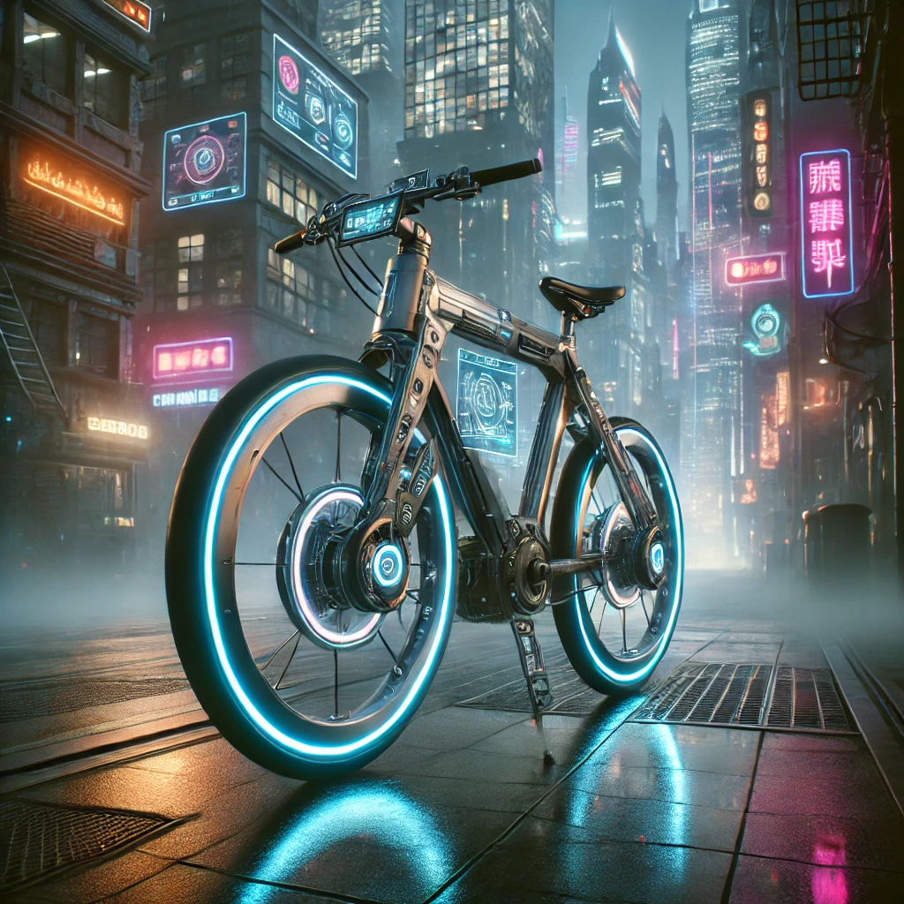

Kyberpunkové Bicykle: Cesta do Dystopickej Budúcnosti
História Kyberpunkových Bicyklov
V kyberpunkovom žánri sa bicykle objavujú ako ekologický a minimalistický spôsob dopravy. V dystopickej budúcnosti, kde megakorporácie ovládajú mestá a infraštruktúru, ľudia hľadajú lacné a efektívne spôsoby pohybu. Bicykle sa často objavujú ako prostriedok odporu proti technologickému preťaženiu a znečisteniu.

Moderné Technológie
Moderné kyberpunkové bicykle nie sú len obyčajné stroje. Sú vybavené pokročilými technológiami, ako sú holografické displeje, GPS navigácia, biometrické uzamykanie a elektrické motory pre asistenciu pri šliapaní. Tieto prvky umožňujú cyklistom efektívne manévrovať cez preplnené mestské ulice a rýchlo sa prispôsobiť meniacim sa podmienkam.
Dizajn a Štýl
Dizajn kyberpunkových bicyklov je charakteristický svojím industriálnym vzhľadom, ostrými líniami a neonovým osvetlením. Bicykle často kombinujú funkčnosť a estetiku, čím vytvárajú unikátny vizuálny dojem, ktorý ladí s kyberpunkovým prostredím. Mnohé modely majú osvetlené rámy a futuristické prvky, ktoré prispievajú k celkovej atmosfére vysokých technológií.